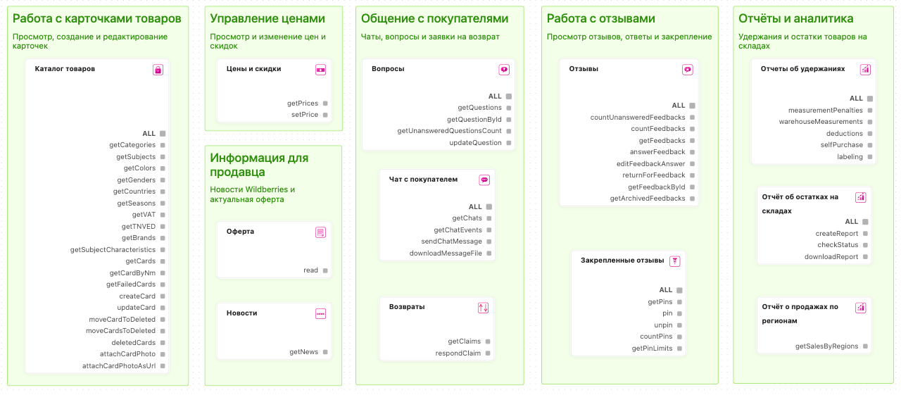

Инструменты MarketAut
MarketAut предоставляет инструменты для работы с магазином Wildberries через поддерживаемые ИИ-сервисы: ChatGPT, Claude, Grok и QwenWork.
Инструменты добавляются в диаграмму в виде узлов. Можно подключить всю группу с помощью пункта ALL или выбрать только отдельные функции.
О новых инструментах и обновлениях MarketAut сообщаем в Telegram-канале.

Все инструменты
Выберите нужный блок, чтобы перейти к его описанию:
- Контент
- Каталог товаров
- Цены
- Цены и скидки
- Коммуникации
- Отзывы
- Закреплённые отзывы
- Вопросы
- Чат с покупателем
- Возвраты
- Отчёты
- Финансы: отчёты
- Финансы: баланс
- Платное хранение
- Удержания
- Продажи по регионам
- Остатки на складах
- Лента заказов
- Документы
- Интеграции
- Telegram
Контент
Каталог товаров
Блок позволяет получать и изменять карточки товаров, их характеристики и фотографии.
Категория токена WB: Контент
Доступ: чтение и запись
| Инструмент | Описание |
|---|---|
catalogue |
Получает данные каталога товаров |
delete |
Удаляет карточку товара |
getCards |
Получает список карточек товаров |
getCardByNm |
Получает карточку товара по артикулу WB |
getFailedCards |
Получает список карточек с ошибками |
createCard |
Создаёт карточку товара |
updateCard |
Обновляет карточку товара |
attachCardPhoto |
Добавляет фотографию в карточку товара |
attachCardPhotoAsUrl |
Добавляет фотографию в карточку товара по ссылке |
Цены
Цены и скидки
Блок позволяет получать текущие цены и скидки, а также изменять их.
Категория токена WB: Цены и скидки
Доступ: чтение и запись
| Инструмент | Описание |
|---|---|
getPrices |
Получает текущие цены и скидки на товары |
setPrice |
Устанавливает новую цену или скидку на товар |
FBS
Заказы и поставки
Блок позволяет работать со сборочными заданиями, заказами и поставками FBS.
Категория токена WB: Маркетплейс
Доступ: чтение и запись
| Инструмент | Описание |
|---|---|
getNewOrders |
Получает список новых сборочных заданий |
getOrdersByPeriod |
Получает сборочные задания за выбранный период |
getOrdersStatuses |
Получает статусы сборочных заданий |
getReshipmentOrders |
Получает сборочные задания для повторной отгрузки |
cancelOrder |
Отменяет сборочное задание |
getOrderStickers |
Получает стикеры сборочных заданий |
getCrossBorderOrderStickers |
Получает стикеры трансграничных заказов |
getCrossBorderOrderStatusHistory |
Получает историю статусов трансграничных заказов |
getOrderClientInfo |
Получает информацию о получателе заказа |
getArchiveOrders |
Получает архив сборочных заданий |
createSupply |
Создаёт новую поставку |
getSupplies |
Получает список поставок |
addOrdersToSupply |
Добавляет сборочные задания в поставку |
getSupplyDetails |
Получает информацию о поставке |
deleteSupply |
Удаляет поставку |
getSupplyOrderIds |
Получает идентификаторы сборочных заданий в поставке |
moveSupplyToDelivery |
Передаёт поставку в доставку |
getSupplyQRCode |
Получает QR-код поставки |
addShippingUnitsToSupply |
Добавляет грузовые места в поставку |
getSupplyShippingUnits |
Получает список грузовых мест поставки |
deleteShippingUnitsFromSupply |
Удаляет грузовые места из поставки |
getSupplyShippingUnitQRCodes |
Получает QR-коды грузовых мест поставки |
Маркировка сборочных заданий
Блок позволяет получать информацию для маркировки сборочных заданий FBS.
Категория токена WB: Маркетплейс
Доступ: только чтение
| Инструмент | Описание |
|---|---|
labels |
Закрепляет маркировку за сборочным заданием |
getLabels |
Получает маркировку сборочного задания |
Пропуска
Блок позволяет получать список пропусков и офисов Wildberries, а также создавать, изменять и удалять пропуска.
Категория токена WB: Маркетплейс
Доступ: чтение и запись
| Инструмент | Описание |
|---|---|
getOfficesForPass |
Получает список складов для оформления пропуска |
getPasses |
Получает список пропусков |
createPass |
Создаёт пропуск |
updatePass |
Обновляет данные пропуска |
deletePass |
Удаляет пропуск |
Коммуникации
Отзывы
Блок позволяет получать отзывы покупателей и выполнять действия с ними.
Категория токена WB: Вопросы и отзывы
Доступ: чтение и запись
| Инструмент | Описание |
|---|---|
read |
Получает данные об отзывах |
update |
Выполняет действия с отзывами |
Закреплённые отзывы
Блок позволяет получать закреплённые отзывы, проверять доступные лимиты, закреплять отзывы и снимать закрепление.
Категория токена WB: Вопросы и отзывы
Доступ: чтение и запись
| Инструмент | Описание |
|---|---|
getPins |
Получает список закреплённых отзывов |
pin |
Закрепляет отзыв |
unpin |
Снимает закрепление с отзыва |
countPins |
Получает количество закреплённых отзывов |
getPinLimits |
Получает доступные лимиты на закрепление отзывов |
Вопросы
Блок позволяет получать вопросы покупателей и отправлять или изменять ответы на них.
Категория токена WB: Вопросы и отзывы
Доступ: чтение и запись
| Инструмент | Описание |
|---|---|
getQuestions |
Получает список вопросов покупателей |
getQuestionById |
Получает вопрос по его идентификатору |
getUnansweredQuestionsCount |
Получает количество неотвеченных вопросов |
updateQuestion |
Отправляет или редактирует ответ на вопрос |
Чат с покупателем
Блок позволяет получать чаты и сообщения покупателей, скачивать вложения и отправлять сообщения.
Категория токена WB: Чат с покупателем
Доступ: чтение и запись
| Инструмент | Описание |
|---|---|
read |
Получает список чатов, сообщения и события |
downloadMessageFile |
Скачивает файл из сообщения |
sendChatMessage |
Отправляет сообщение покупателю |
Возвраты
Блок позволяет получать заявки покупателей на возврат и принимать по ним решения.
Категория токена WB: Возвраты
Доступ: чтение и запись
| Инструмент | Описание |
|---|---|
getClaims |
Получает заявки покупателей на возврат товаров |
respondClaim |
Отправляет решение по заявке на возврат |
Отчёты
Финансы: отчёты
Блок позволяет получать детализированный финансовый отчёт за выбранный период.
Категория токена WB: Статистика
Доступ: только чтение
| Инструмент | Описание |
|---|---|
getDetailsByPeriod |
Получает финансовый отчёт за выбранный период |
Финансы: баланс
Блок позволяет получать текущий баланс продавца.
Категория токена WB: Финансы
Доступ: только чтение
| Инструмент | Описание |
|---|---|
getBalance |
Получает текущий баланс продавца |
Отчёт о платном хранении
Блок позволяет получать отчёт о начислениях за платное хранение товаров.
Категория токена WB: Аналитика
Доступ: только чтение
| Инструмент | Описание |
|---|---|
report |
Получает отчёт о платном хранении |
Отчёты об удержаниях
Блок позволяет получать отчёты об удержаниях, замерах упаковки, самовыкупах и отсутствии обязательной маркировки.
Категория токена WB: Аналитика
Доступ: только чтение
| Инструмент | Описание |
|---|---|
measurementPenalties |
Получает отчёт об удержаниях за занижение габаритов упаковки |
warehouseMeasurements |
Получает результаты замеров упаковки на складах Wildberries |
deductions |
Получает отчёт об удержаниях |
selfPurchase |
Получает отчёт об удержаниях за самовыкупы |
labeling |
Получает отчёт об удержаниях за отсутствие обязательной маркировки |
Отчёт о продажах по регионам
Блок позволяет получать отчёт о продажах товаров по регионам.
Категория токена WB: Аналитика
Доступ: только чтение
| Инструмент | Описание |
|---|---|
getSalesByRegions |
Получает отчёт о продажах товаров по регионам |
Отчёт об остатках на складах {#stocks
Блок позволяет получать отчёт об остатках товаров на складах Wildberries.
Категория токена WB: Статистика
Доступ: только чтение
| Инструмент | Описание |
|---|---|
report |
Получает отчёт об остатках товаров на складах |
Лента заказов
Блок позволяет получать отчёт «Лента заказов».
Категория токена WB: Статистика
Доступ: только чтение
| Инструмент | Описание |
|---|---|
getOrders |
Получает отчёт «Лента заказов» |
Документы
Блок позволяет находить и загружать документы Wildberries в ZIP-архиве.
Категория токена WB: Документы
Доступ: только чтение
| Инструмент | Описание |
|---|---|
documents |
Загружает документы Wildberries в ZIP-архиве |
Информация
Новости
Блок позволяет получать список новостей Wildberries для продавцов.
Категория токена WB: отдельная категория не требуется
Доступ: только чтение
| Инструмент | Описание |
|---|---|
getNews |
Получает список новостей Wildberries |
Оферта
Блок позволяет получать актуальный текст оферты Wildberries.
Категория токена WB: не требуется
Доступ: только чтение
| Инструмент | Описание |
|---|---|
read |
Получает текст оферты |
Интеграции
Telegram
Блок позволяет отправлять сообщения и скачивать файлы через Telegram.
Категория токена WB: не требуется
Доступ: чтение и запись в Telegram
| Инструмент | Описание |
|---|---|
sendMessage |
Отправляет сообщение в Telegram |
downloadFile |
Скачивает файл из Telegram |